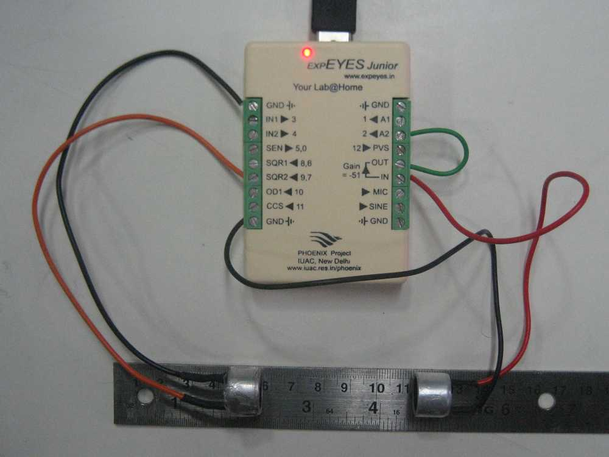

The 40 kHz Piezo Transmitter is driven by SQR1. The Receiver output is connected to A1. The phase difference between the driving square wave and the sine wave received at A1 is measured as a function of distance between the transmitter and the receiver.
